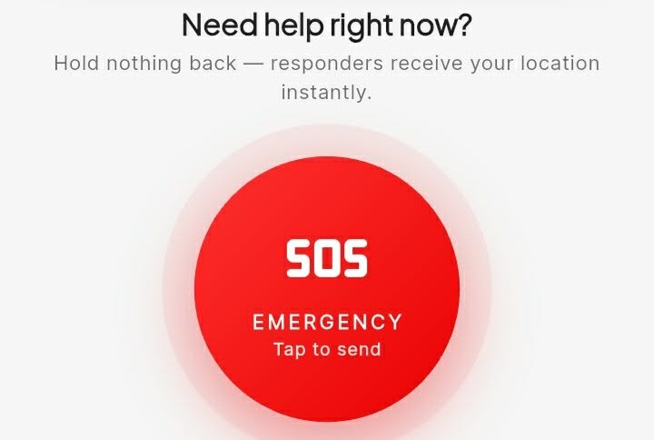

01 / PROJECT
SUMPAY
DeveloperAn all-around emergency and response application with offline functionality as a fallback for situations where internet connectivity is unavailable.
Flutter
Academic Project